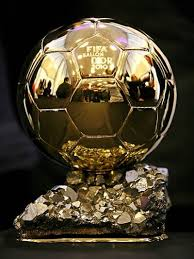

LOS 4 MEJORES JUGADORES DEL MUNDO
ELIAS AMADOR VAZQUEZ 
INFORMACION DE MESSI
Lionel Andrés Messi Cuccittini,
Es muy conocido también como Leo Messi, es un futbolista y medallista olímpico argentino que también tiene nacionalidad española desde 2005. Juega como delantero en el F. C.
Fecha de nacimiento: 24 de junio de 1987 (edad 27), Rosario, Argentina
Estatura: 1,70 m
Pareja: Antonella Roccuzzo (2008–)
Salario: 20 millones EUR (2014)
Hijos: Thiago Messi
Equipos actuales: Fútbol Club Barcelona (#10 / Delantero), Selección de fútbol de Argentina (Centrocampista, Delantero),
Messi es un jugador destacado de la selección argentina, donde actualmente se desempeña como capitán del equipo.72 En 2006 llegó a ser el jugador más joven de la selección argentina en asistir a una Copa Mundial de Fútbol, con la cual obtuvo el subcampeonato en la Copa América 2007 y en la Copa Mundial de Fútbol de 2014. En 2008, en los Juegos Olímpicos de Pekín, consiguió su primer premio internacional, una medalla de oro. A fines de 2011 fue seleccionado dentro de las 32 personalidades más populares del año por la revista Time, postulándose como candidato a la «persona del año», siendo el único deportista nominado en dicha lista. En 2012, consiguió anotar 12 goles en un año con su selección nacional, igualando así la marca establecida por Gabriel Batistuta en 1998.
LIONEL MESSI .jpg)
INFORMACION DE RONALDINHO
Ronaldinho, es un futbolista brasileño. Juega como Mediapunta en el Querétaro Fútbol Club de la Liga MX.
Debutó como futbolista profesional en el club Grêmio de Porto Alegre, pero desarrolló gran parte de su carrera futbolística en Europa, donde jugó en el Paris Saint-Germain, F. C. Barcelona y AC Milan. Se dio a conocer principalmente en el club español, equipo en el que permaneció durante cinco temporadas y recibió el reconocimiento mundial por parte de la prensa, jugadores y varios organismos deportivos. Destaca por su gran técnica y calidad a la hora de controlar el balón, así como también, por la precisión en sus pases, y los regates. Es conocido en el medio futbolístico por sus jugadas, entre las que se destaca la «elástica», el «autopase»,7 la «vaselina»,7 la «espaldinha»,8 la «bicicleta»8 o la «cola de vaca».8
La FIFA le destacó como el mejor jugador del mundo junto, después de recibir el premio al Jugador Mundial de la FIFA en 2004 y 2005. La prestigiosa revista francesa France Football le concedió el Balón de Oro en 2005, premio que le acreditaba como el mejor de Europa, mientras que la revista británica World Soccer le otorgó el premio World Soccer al mejor jugador del mundo en 2004 y 2005. La misma revista le declaró mejor futbolista mundial de la primera década del siglo XXI.9
El 6 de febrero de 2013 completó 100 partidos con la Selección de fútbol de Brasil,10 con la que ganó las tres principales competiciones a nivel de selecciones: la Copa Mundial de Fútbol de 2002, la Copa América de 1999 y la Copa FIFA Confederaciones 2005. Ese mismo año, Ronaldinho se convirtió en el sexto futbolista de la historia en ganar la UEFA Champions League y la Copa Libertadores, tras alcanzar este último, con el Atlético Mineiro.
RONALDINHO .jpg)
INFORMACION DE CRISTIANO RONALDO
Ronaldo fue la gran figura de la histórica selección brasileña que ganó el Mundial de Corea del Sur y Japón 2002 y el subcampeonato en Francia 98. Obtuvo además la Copa América de 1997 y 1999, así como diversos títulos europeos con prestigiosos equipos como PSV Eindhoven, FC Barcelona, Inter, Real Madrid y AC Milan. Integró también el plantel brasileño que ganó el mundial de Estados Unidos 94 contando solo con 17 años, aunque no disputó ningún partido del campeonato.
Ha sido galardonado con el Premio FIFA World Player en 1996, 1997 y 2002 la Bota de Oro de Europa en 1997, el Balón de Oro de Europa en 1997 y 2002. Asimismo, obtuvo el Balón de Oro en el Mundial de Francia 98 y la Bota de Oro en el Mundial de Corea y Japón 2002, entre otros premios.
Fue el máximo goleador en la historia de la Copa Mundial de Fútbol durante ocho años, récord posteriormente superado por el alemán Miroslav Klose en la Copa Mundial de Fútbol de 2014. Ronaldo es también el segundo goleador histórico de la selección brasileña, después de Pelé.9
Sin embargo, debido a la tempranera eliminación del Corinthians por el Deportes Tolima (0-0 como local y 2-0 de visitante en el Estadio Murillo Toro de Ibagué) de la Copa Libertadores, su principal motivación para seguir en activo en la temporada 2010-2011, las secuelas de sus viejas y graves lesiones y sus dificultades para alcanzar su peso ideal para la competición, además de la furia de la hinchada corintiana precipitaron el anuncio de su retirada definitiva en un comunicado el 14 de febrero de 2011.
CRISTIANO RONALDO .jpg)
INFORMACION DE JAVIER HERNANDEZ
Javier Hernández Balcázar (n. 1 de junio de 1988, Guadalajara, Jalisco, México), comúnmente conocido por su apodo Chicharito»,1 es un futbolista mexicano que juega como delantero en el Real Madrid Club de Fútbol de la Liga BBVA.4
Jugador internacional absoluto con México, su mejor actuación se produjo en la Copa de Oro de 2011, donde fue nombrado mejor jugador y Bota de Oro del campeonato tras anotar siete goles en seis partidos que le permitieron salir campeón del torneo, siendo su mayor logro con la selección mexicana. Es el segundo máximo goleador histórico de la selección mexicana con 39 goles, solo por debajo de Jared Borgetti, quien tiene 46 goles.5
A nivel de clubes, su mejor actuación se dio con el Manchester United F. C. en la temporada 2010/2011 en donde fue campeón de la Premier League y la Community Shield, siendo uno de los goleadores del equipo y superando a grandes figuras como Wayne Rooney y Michael Owen. Fue nombrado Jugador del año Sir Matt Busby.6 En la misma temporada llegó a la final de la Liga de Campeones, en donde su equipo cayó frente al F. C. Barcelona, quedando subcampeón del torneo.7
En el Torneo Bicentenario 2010 llegó a ser el goleador del Guadalajara. Javier empezó el torneo anotando 2 goles en cada uno de los 3 primeros partidos del torneo, ante Toluca,10 ante Tigres,11 y ante Estudiantes.12 Este último fue visto como uno de los mejores partidos de Javier con el Guadalajara, ya que, además de haber dado una asistencia y de haber anotado 2 goles, dirigió una voltereta cuando Chivas iba perdiendo por 0-2.12 Luego de haber anotado goles ante Querétaro13 y ante Atlante,14 Debido a una lesión, Javier no anotó un solo gol durante 5 jornadas, razón por la que no figuraba dentro de la alineación de su equipo. No obstante, seguía siendo el goleador del torneo, con 8 anotaciones. En la jornada 11 Javier volvió a meter goles, al haber anotado un gol en la derrota de su equipo por 2-1 ante el Monterrey.
CHICHARITO .jpg)
INFORMACION WAYNE ROONEY
Wayne Rooney (Croxteth, Liverpool, Inglaterra, 24 de octubre de 1985) es un futbolista inglés. Juega en la posición de delantero y su actual equipo es el Manchester United de la Premier League de Inglaterra. Rooney inició su carrera deportiva en el Everton F. C., luego de unirse a su equipo juvenil a la edad de 10 años. Debutó profesionalmente en 2002 después de su ascenso al primer equipo.
Tras permanecer durante dos temporadas con los «blues» fue transferido al Manchester United por 25,6 millones de libras. Desde entonces ha obtenido diez títulos a nivel nacional (cinco Premier League, dos Copas de la Liga de Inglaterra y tres Community Shield) y dos a nivel internacional (una Liga de Campeones de la UEFA y una Copa Mundial de Clubes de la FIFA).
Con la selección de fútbol de Inglaterra ha participado en tres Copas del Mundo y en dos ediciones de la Eurocopa (en 2004 donde se convirtió en el futbolista más joven en marcar un gol en dicha competición y en 2012). A lo largo de su carrera, también ha obtenido diversos títulos individuales como el Trofeo Bravo, el Premio Sir Matt Busby, el Premio PFA al jugador joven del año entre otros.
En la temporada 2003-04, anotó nueve goles en treinta y cuatro encuentros de la liga. Sin embargo, al Everton no le fue nada bien en el torneo, finalizó en el 17.° puesto con treinta y nueve puntos producto de nueve victorias, doce empates y diecisiete derrotas, a sólo seis puntos del descenso.21 En la FA Cup se enfrentaron en la tercera ronda al Norwich City venciéndolo por 3:1,22 en la siguiente fase empataron 1:1 con el Fulham F. C.,23 por lo que se disputó un encuentro extra en el que el Everton cayó derrotado por 2:1 en condición de visitante.24 Mientras que en la Copa de la Liga de Inglaterra, tras haber derrotado previamente al Stockport County 3:0,25 y al Charlton Athletic 1:0,26 avanzaron hasta los octavos de final siendo eliminados por el Middlesbrough F. C. 5:4 en definición por penales.
WAYNE ROONEY .jpg)